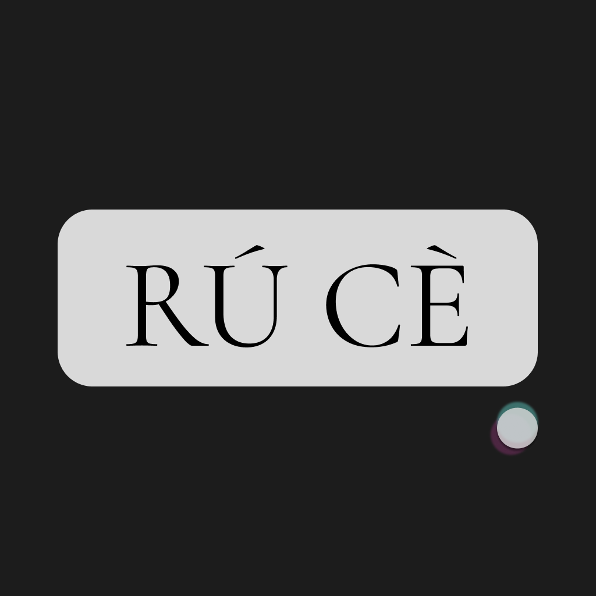

Ruce
脉律身语 - Your Personalized TCM Wellness Companion
About Ruce
Ruce是一款结合中医体质、脉象分析，为您量身定制如厕、饮水计划，并追踪情绪与月经周期的智能健康App。通过与我们的另一款App Bamai（模拟中医把脉App）联动，Ruce能够更精准地了解您的身体状况，提供个性化的健康建议。
Ruce is a smart health app that integrates Traditional Chinese Medicine (TCM) constitution and pulse analysis to create personalized bowel movement and hydration plans, while also tracking emotional and menstrual cycles. By connecting with our other app, Bamai (a simulated TCM pulse-taking app), Ruce gains a more accurate understanding of your body's condition, providing tailored wellness recommendations.
核心功能 | Key Features
- 个性化如厕计划 (Personalized Bowel Movement Plan): 根据您的体质和脉象特点，Ruce会智能推荐最适合您的如厕时间与频率，帮助您养成健康的排便习惯。 (Based on your constitution and pulse characteristics, Ruce intelligently recommends the most suitable timing and frequency for bowel movements, helping you develop healthy habits.)
- 智能饮水提醒 (Smart Hydration Reminders): 基于您的身体数据，Ruce会制定个性化的饮水计划，并在最佳时间提醒您补充水分。 (Utilizing your body data, Ruce creates a personalized hydration plan and reminds you to drink water at optimal times.)
- 情绪波动周期监测 (Mood Swing Cycle Tracking): 记录并分析您的情绪变化，帮助您了解自身的情绪周期，更好地应对情绪波动。 (Record and analyze your mood fluctuations, helping you understand your emotional cycles and better manage emotional changes.)
- 月经周期追踪 (Menstrual Cycle Tracking - for female users): 精准记录和预测您的月经周期，提供经期健康建议和贴心提醒。 (Accurately track and predict your menstrual cycle, providing period health advice and thoughtful reminders.)
- Bamai联动 (Bamai Integration): 与Bamai无缝连接，获取更全面的脉象信息，提升健康建议的精准度。 (Seamlessly connects with Bamai to obtain more comprehensive pulse information, enhancing the accuracy of health recommendations.)
System Requirements (Example)
- iPhone: iOS 15.0 or later
- iPad: iPadOS 15.0 or later
- Requires Bamai app for full pulse integration features.
Privacy
Your privacy is important to us. For more details, please check our Privacy Policy.